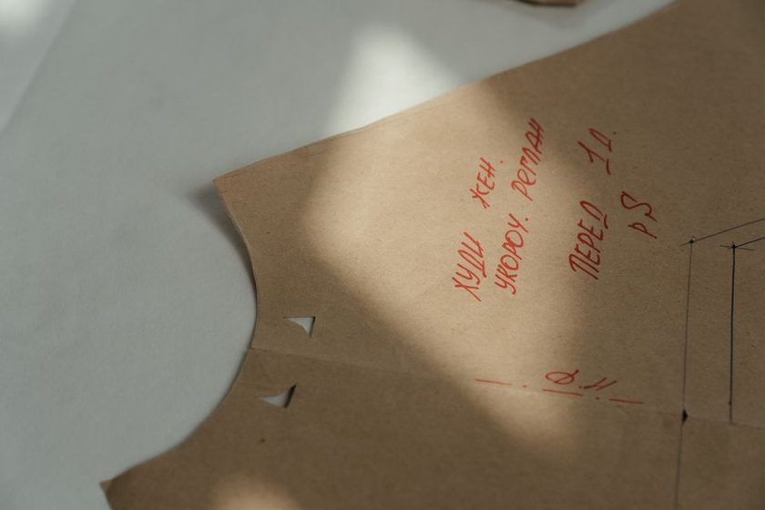

Reading a Commercial Pattern Against Your Own Block Before You Cut
Laying a commercial pattern piece over a personal block before cutting shows exactly where a size is going to fight the body — before a stitch is sewn.

The envelope says size 14. The chart on the back says size 14 too, more or less, if you round the waist measurement up and pretend the bust one didn't happen. So you cut a 14, sew it, put it on, and spend the next hour pinning out the same excess across the upper chest that you pinned out of the last three garments. Nothing about that hour was new information. You already knew the shape of that surplus — it is written on your block, the one you spent a weekend correcting and have not touched since. The overlay is simply the habit of asking the block first. Fifteen minutes with tracing paper and a couple of pins tells you where the printed size and your body disagree, and how much of that disagreement is actually the designer's intention rather than a mistake waiting to be sewn.
What the size chart cannot tell you
A size chart lists body measurements. It says nothing about how those measurements are distributed. Two people with the same bust circumference can need completely different front pieces — one with the fullness low and forward, one with it high and closer to the armhole — and the chart flattens both into a single number. It also says nothing about shoulder slope, back width, or the distance from your neck to the fullest part of the bust, which is usually the measurement doing the most damage when a bodice pulls.
Your block carries all of that. If you built it by measuring over the clothes you actually wear, it also carries the small realities of posture and undergarments that a tape held against bare skin quietly discards. That makes the block a better reference document than the chart, because it is a shape rather than a list. Comparing shape to shape is the whole trick.
The overlay, step by step
Work on a flat surface with good light. Trace the commercial piece first if you want to keep the original intact — tissue tears, and you will be moving it around.
- Strip both pieces to the same terms. Trace the commercial front bodice without seam allowance, or mark the stitching line clearly on the tissue. Your block probably has no allowance on it. Comparing a net line to a cut line invents differences that are not there.
- Match the centre front lines. Lay the traced piece over the block with both centre fronts on top of each other, grainline to grainline. Pin at two points along that line so the pieces cannot drift while you work.
- Match the waistline next. Slide the tissue up or down until the waist marks align. Centre front plus waist is your shared origin. Every difference you read from here is measured from a fixed point, not a guess.
- Read the shoulder. Look at where the neck point sits and where the shoulder tip lands. A tip that falls outside your block by a consistent amount is a wider shoulder line; a tip that sits lower is a different slope. Note both — they are separate problems.
- Read the bust and the armhole. Check the depth of the armhole curve and the position of the bust apex relative to the block's dart point. Ignore total side-seam width for the moment. You are looking at where the shaping is aimed.
- Read the waist and hip. Measure the horizontal gap between the block's side seam and the tissue's side seam at the waist, then at the hip. Write the numbers directly on the tissue in pencil, at the point where you measured them.
- Repeat with the back piece. Do not skip it. Back width and shoulder slope discrepancies show up here far more clearly, and a front that fits over a back that binds is still a garment you will not wear.
Design ease is not a fit problem
Every measurement over your block is one of two things. Design ease is room the designer put there on purpose — the flare of a swing jacket, the blousing of an oversized shirt, the drop shoulder that defines the whole silhouette. Fit difference is a mismatch between the pattern's assumed body and yours, and it appears in the same place on every pattern you own.
The test is repeatability. If the surplus at the upper chest is 3/8 inch on this pattern, on last year's dress, and on the shirt from a different company, that is your body talking. If a piece is generous at the hip only on this one pattern, and the line drawing shows a garment that stands away from the body, leave it alone. Cutting design ease out of a design turns it into something else — usually something that fits, and disappoints.
Sorting what you found
Once the numbers are pencilled on the tissue, sort them before you touch anything. Some differences are worth correcting on paper right now, some are cheaper to handle at the fitting, and some should be left exactly as drawn.
| What the overlay shows | Likely reading | Sensible response |
|---|---|---|
| Shoulder tip sits lower on the tissue than on the block | Shoulder slope difference — appears on every pattern | Correct on paper before cutting; it changes the armhole and drag lines you cannot pin out later |
| Bust apex on the tissue is higher or lower than the block's dart point | Fit difference in apex position | Move the dart point, then re-true the dart legs; see the rotation notes below |
| Side seam sits well outside the block from underarm to hem, evenly | Usually design ease — a relaxed or boxy silhouette | Leave it; check the line drawing to confirm the intent |
| Extra width at the hip only, with the waist matching closely | Could be either — depends whether it repeats across patterns | Baste the side seam and decide on the body, not on paper |
| Back width narrower than the block at the shoulder blade | Fit difference; the piece will pull when the arms come forward | Correct on paper — it is a comfort problem, not a style one |
The overlay does not tell you what to change. It tells you what to stop rediscovering, one muslin at a time.
Corrections that survive the transfer
When a difference is genuinely yours, correcting it on the commercial piece follows the same discipline as correcting the block: change one thing, true the lines it touches, and write down what you did. A shoulder slope adjustment changes the armhole length, which changes what the sleeve cap has to absorb — worth reading alongside what the ease numbers on a sleeve pattern actually mean before you assume the sleeve will still go in cleanly.
A few things tend to go wrong at this stage:
- Adding width at a side seam without adding the same amount to the piece it joins. Front and back have to stay equal from underarm to hem.
- Moving a dart point without re-truing the legs, so the dart no longer folds flat at the seam line.
- Correcting the front for a bust difference and forgetting the back, then wondering why the side seam swings forward.
- Losing track of which seam allowance the commercial pattern uses after you traced it off at the stitching line. Pick one allowance and use it everywhere, for reasons covered in the notes on why allowance consistency beats allowance size.
When redrafting is simply less work
There is a point where altering a commercial piece costs more than drawing the garment from your block. It usually arrives sooner than people expect. A rough rule some drafters use: if the correction list runs past three separate adjustments, or if any single adjustment moves a seam line by more than about an inch, the pattern is fighting you.
The redraft path is short for simple shapes. A straight skirt, a basic shift, a shell top with a plain sleeve — those are your block plus a hem length and a neckline, and if your skirt block already has two darts rather than one the shaping is largely done. Where a commercial pattern earns its place is in construction detail: a collar you have not drafted, an unusual closure, a cut-and-sew seam arrangement you would rather copy than invent. In those cases, trace only the detail pieces and build the body from the block underneath.
Keep the marked-up tissue either way. Written on it are your recurring corrections, in your own handwriting, at the exact points where they apply — which is what makes the next overlay take ten minutes instead of forty.
A note on scope
These are notes from a home sewing table, not a professional pattern-making curriculum. Bodies, blocks and pattern companies vary, and what reads as a fit difference on one person's overlay may be design ease on another's. Treat every number here as a starting point to test in cloth, and trust the muslin over the article.